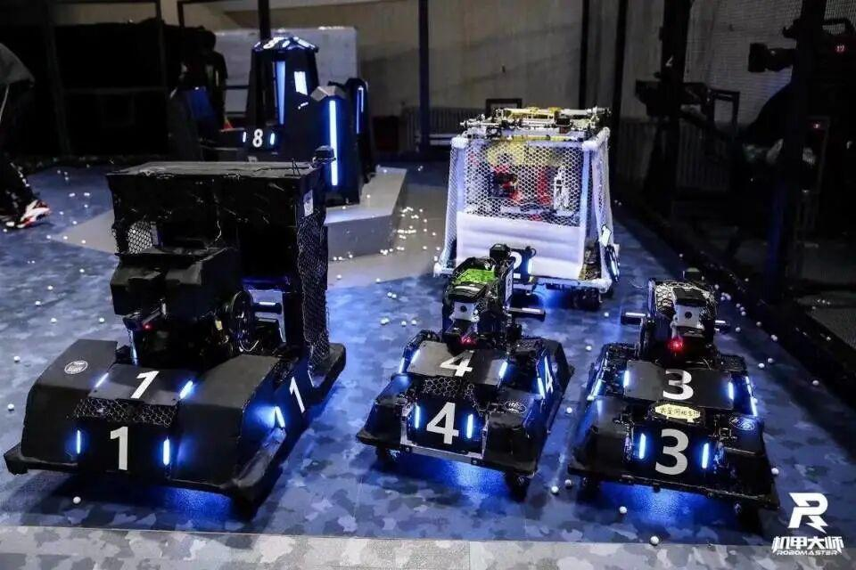

乒哩乓啷，组装小分队采访新鲜出炉！
技术部
机械组
重磅来袭
他们是谁？
他们能为社团日常提供技术支持
能够搭建机器人所需的结构
是实至名归的大佬
心动了吗，小编带你进入大佬的世界
个人篇
01
爱好做机器人，画图，希望有招一日可以做出一个让自己满意的人（猜一个人）
点击空白处查看答案
02
高中时期就对RoboMaster比赛产生兴趣，在大学时便加入了电协（猜一个人）
点击空白处查看答案
03
他曾经是电协办公室的一名成员，从当初的不知天高地厚变成现在的成熟稳定（猜一个人）
点击空白处查看答案
04
她学的是机械专业，秉承着锻炼自己，想要成长的初心加入了电协这个大家庭（猜一个漂亮的学姐）
点击空白处查看答案
这是一个热爱绘图和安装机械的漂亮的小姐姐，想要看看漂亮的学姐吗，猛戳几下，即可看见哟
以上都是大二大三的学长学姐，接下来带大家来了解一下大一的新鲜血液
刘清清：一个擅长绘图设计，热爱参加比赛的女孩子
张兰鑫：一个喜欢尝试新的事物，热爱运动的男孩子
哈哈，当然大一的小萌新可不止这些，大一萌新的神秘面罩等着你们揭开


刘清清：之前想提升自己，先加入了与自己专业相关的电协社团，后面为了深层次提升自己的动手能力，选择进入技术部。
冯涛：当时社团的学长参加的比赛吸引，外加自身就比较喜欢这一类的东西，感觉做这些非常酷。


大家还记得当初加入技术部的初心是什么吗
单昱：为了参加RoboMaster机甲大师赛，努力跟在其他队伍的高中同学会师深圳。
张永生：渴望学习一些知识


大家认为自己在加入电协后遇到最大的困难是什么
潘晶：最大的困难就是自己的知识，经验积累的不够多，想法不够新颖。
单昱：我在高中参加机器人比赛时，机械，嵌入式，视觉等方面都有所涉及，但是因为基本上都是自学的，所以学的比较杂，没有明确的主攻方向。所以刚加入技术部时我也挺迷茫的，没法好好的定下来自己的主要学习方向。因此大一时我其实是电控组的，大二又跳槽到了机械组

大家来听听组长怎么对大家说的吧
答案
点击下方空白处获得答案
排版：杜岑
图片：技术部